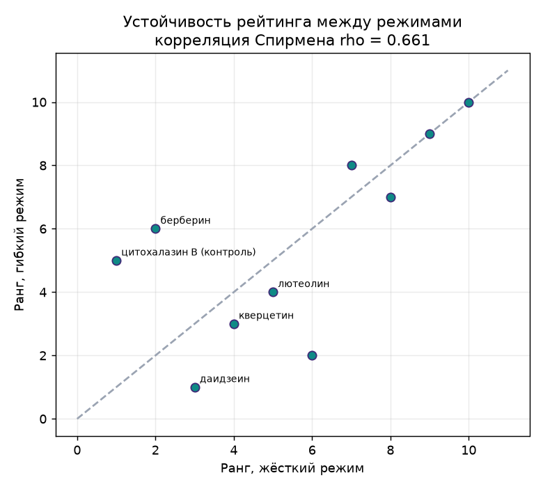

Проект «Сириус.Лето» · партнёр: СПбПУ Петра Великого · движок: glut4lab · запусков на режим: 3 · дата сборки отчёта: 18.11.2026
| всего соединений | 35 |
| контрольных | 1 |
| кандидатов | 34 |
| с экспериментальными данными | 19 |
| без источника | 0 |
| без обоснования включения | 0 |
| не разобраны | 0 |
| в диапазоне 30-50 | True |
| масса, мин-макс | 129-480 |
| тяжёлых атомов, медиана | 20.0 |
RMSD = 0.485 Å при пороге 2.0 Å — протокол принят. положение воспроизведено, протокол можно применять к библиотеке


| № | Соединение | Средняя оценка | Разброс | Запусков |
|---|---|---|---|---|
| 1 | цитохалазин B (контроль) | -11.549 | 0.286 | 3 |
| 2 | берберин | -9.318 | 0.227 | 3 |
| 3 | даидзеин | -9.315 | 0.43 | 3 |
| 4 | кверцетин | -9.218 | 0.111 | 3 |
| 5 | лютеолин | -9.124 | 0.092 | 3 |
| 6 | генистеин | -9.105 | 0.895 | 3 |
| 7 | гесперетин | -9.075 | 0.25 | 3 |
| 8 | кемпферол | -9.019 | 0.293 | 3 |
| 9 | мирицетин | -9.003 | 0.245 | 3 |
| 10 | апигенин | -8.913 | 0.537 | 3 |
| 11 | (+)-катехин | -8.84 | 0.199 | 3 |
| 12 | (-)-эпикатехин | -8.675 | 0.837 | 3 |
| 13 | нарингенин | -8.597 | 0.27 | 3 |
| 14 | WZB117 | -8.296 | 0.245 | 3 |
| 15 | дапаглифлозин | -8.274 | 0.784 | 3 |
| Соединение | Жёсткий | Гибкий | Разница | Ранг жёсткий | Ранг гибкий |
|---|---|---|---|---|---|
| цитохалазин B (контроль) | -11.549 | -15.163 | -3.614 | 1 | 5 |
| берберин | -9.318 | -13.609 | -4.291 | 2 | 6 |
| даидзеин | -9.315 | -16.47 | -7.155 | 3 | 1 |
| кверцетин | -9.218 | -15.391 | -6.173 | 4 | 3 |
| лютеолин | -9.124 | -15.189 | -6.065 | 5 | 4 |
| апигенин | -8.913 | -15.465 | -6.552 | 6 | 2 |
| дапаглифлозин | -8.274 | -12.481 | -4.207 | 7 | 8 |
| ресвератрол | -7.388 | -13.566 | -6.178 | 8 | 7 |
| кофейная кислота | -6.496 | -11.616 | -5.12 | 9 | 9 |
| D-глюкоза | -5.702 | -9.369 | -3.667 | 10 | 10 |
Расчётная оценка связывания не равна биологической активности. Соединения из этой таблицы — кандидаты для экспериментальной проверки, а не лекарства.